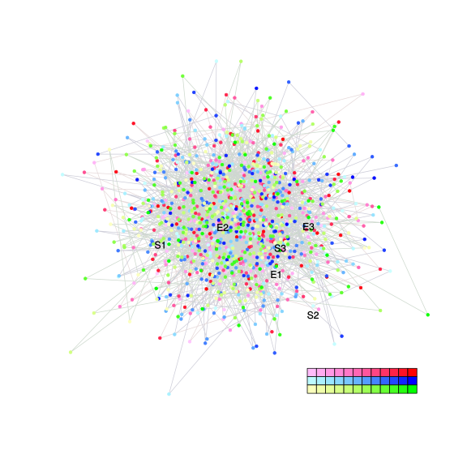
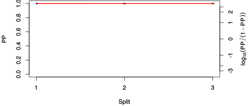
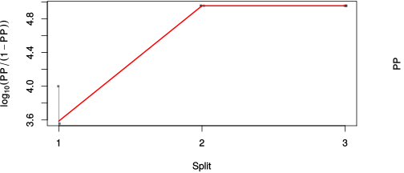

| chain # | burnin | subsample | Iterations (remaining) | command line | subdirectory | directory |
|---|---|---|---|---|---|---|
| 1 | 10000 | 1 | 90000 | bali-phy E1_AA_red3_PerissoArtio.fas -s 63335 -n PerissoArtio_c1 | PerissoArtio_c1-1 | /DATA/work/ONCOGENEVOL/database/trees/Bali-Phy/red3/E1 |
| 2 | 10000 | 1 | 90000 | bali-phy E1_AA_red3_PerissoArtio.fas -s 55563 -n PerissoArtio_c2 | PerissoArtio_c2-1 | /DATA/work/ONCOGENEVOL/database/trees/Bali-Phy/red3/E1 |
| 3 | 10000 | 1 | 90000 | bali-phy E1_AA_red3_PerissoArtio.fas -s 23633 -n PerissoArtio_c3 | PerissoArtio_c3-1 | /DATA/work/ONCOGENEVOL/database/trees/Bali-Phy/red3/E1 |
| P(data|M) = -7343.337 +- 0.741 | Complete sample: 2 topologies | 95% Bayesian credible interval: 1 topologies |

Phylogeny Distribution

| Partition support: Summary |
| Partition support graph: SVG |
| 50% consensus | Newick (+PP) | SVG | |||||
| 66% consensus | Newick (+PP) | SVG | |||||
| 80% consensus | Newick (+PP) | SVG | |||||
| 90% consensus | Newick (+PP) | SVG | |||||
| 95% consensus | Newick (+PP) | SVG | |||||
| 99% consensus | Newick (+PP) | SVG | |||||
| 100% consensus | Newick (+PP) | SVG | |||||
| MAP | Newick (+PP) | SVG | |||||
| greedy | Newick (+PP) | SVG |
{kind=link}
{kind=link}
{kind=link}
{kind=link}
{kind=link}
{kind=link}
{kind=link}
{kind=link}
Alignment Distribution
Partition 1
| Diff | Min. %identity | # Sites | Constant | Informative | ||||
|---|---|---|---|---|---|---|---|---|
| Initial | FASTA | HTML | Diff | 4.83% | 642 | 1 (0.156%) | 94 (14.6%) | |
| Best (WPD) | FASTA | HTML | AU | 33.4% | 794 | 124 (15.6%) | 231 (29.1%) |


Mixing
| burnin (scalar) | ESS (scalar) | ESS (partition) | ASDSF | MSDSF | PSRF-CI80% | PSRF-RCF |
|---|---|---|---|---|---|---|
| 3910 | 469.7 | 69386.078 | 0.000 | 0.000 | 1.001 | 1.013 |
Projection of RF distances for the first 3 chains3D | Variation of split PPs across chains |
Scalar variables
| Statistic | Median | 95% BCI | ACT | ESS | burnin | PSRF-CI80% | PSRF-RCF |
|---|---|---|---|---|---|---|---|
| prior | -522.2 | (-584.9, -464.2) | 149.6 | 1804 | 684 | 1 | 1.006 |
| prior_A1 | -503 | (-565.6, -447.4) | 130.9 | 2063 | 203 | 1 | 1.006 |
| likelihood | -7299 | (-7341, -7258) | 196.6 | 1373 | 283 | 1.001 | 1.01 |
| logp | -7822 | (-7865, -7783) | 87.3 | 3092 | 1220 | 1 | 0.9963 |
| Heat.beta | 1 | ||||||
| Scale1 | 2.199 | (0.8753, 4.542) | 1.014 | 266340 | 98 | 0.9999 | 1 |
| S1.F.pi.A | 0.08399 | (0.07193, 0.09666) | 8.239 | 32771 | 121 | 1 | 0.9994 |
| S1.F.pi.R | 0.05004 | (0.04064, 0.06022) | 8.932 | 30229 | 209 | 0.9999 | 1.002 |
| S1.F.pi.N | 0.03597 | (0.0285, 0.04372) | 8.841 | 30539 | 506 | 0.9999 | 1.004 |
| S1.F.pi.D | 0.05117 | (0.04155, 0.06183) | 8.514 | 31712 | 223 | 0.9999 | 0.9949 |
| S1.F.pi.C | 0.04424 | (0.03389, 0.05554) | 8.26 | 32688 | 714 | 0.9999 | 1.002 |
| S1.F.pi.Q | 0.05018 | (0.04122, 0.0595) | 10.18 | 26518 | 137 | 1.001 | 1.002 |
| S1.F.pi.E | 0.05287 | (0.04358, 0.06275) | 8.73 | 30927 | 111 | 1 | 0.996 |
| S1.F.pi.G | 0.07287 | (0.05936, 0.08662) | 19.31 | 13981 | 748 | 1 | 0.9939 |
| S1.F.pi.H | 0.02865 | (0.02163, 0.03613) | 8.196 | 32943 | 454 | 0.9997 | 0.9976 |
| S1.F.pi.I | 0.03266 | (0.02517, 0.04051) | 8.298 | 32540 | 312 | 1 | 1.003 |
| S1.F.pi.L | 0.09769 | (0.08353, 0.1125) | 8.414 | 32089 | 169 | 1 | 1.001 |
| S1.F.pi.K | 0.04435 | (0.03572, 0.05343) | 8.965 | 30117 | 585 | 0.9999 | 1.005 |
| S1.F.pi.M | 0.01878 | (0.01342, 0.02474) | 7.877 | 34276 | 510 | 0.9999 | 0.9978 |
| S1.F.pi.F | 0.04756 | (0.03764, 0.05834) | 9.204 | 29336 | 519 | 1 | 1.001 |
| S1.F.pi.P | 0.04681 | (0.03637, 0.05773) | 11.69 | 23091 | 280 | 1 | 1.001 |
| S1.F.pi.S | 0.07905 | (0.06762, 0.09088) | 12.93 | 20878 | 166 | 1 | 1.004 |
| S1.F.pi.T | 0.05656 | (0.04686, 0.06675) | 8.123 | 33240 | 327 | 0.9995 | 0.9989 |
| S1.F.pi.W | 0.0153 | (0.009452, 0.02215) | 8.58 | 31467 | 337 | 1 | 1.002 |
| S1.F.pi.Y | 0.02495 | (0.01795, 0.03257) | 8.016 | 33683 | 223 | 1 | 0.9977 |
| S1.F.pi.V | 0.06308 | (0.05247, 0.07436) | 8.037 | 33595 | 160 | 1 | 1.005 |
| I1.RS07.meanIndelLengthMinus1 | 3.64 | (2.13, 5.327) | 294.3 | 917 | 632 | 0.9998 | 1.003 |
| I1.RS07.logLambda | -3.906 | (-4.198, -3.6) | 14.16 | 19064 | 86 | 1 | 0.999 |
| |A1| | 745 | (709, 788) | 574.8 | 469 | 3910 | 0.9755 | 1.001 |
| #indels1 | 59 | (50, 67) | 102.1 | 2645 | 643 | 0.8824 | 0.9996 |
| |indels1| | 277 | (203, 337) | 550.9 | 490 | 1367 | 0.9805 | 1.013 |
| #substs1 | 1126 | (1092, 1155) | 458.1 | 589 | 801 | 1 | 0.9993 |
| Scale1*|T| | 2.395 | (2.233, 2.557) | 24.84 | 10871 | 136 | 1 | 0.9999 |
| |A| | 745 | (709, 788) | 574.8 | 469 | 3910 | 0.9755 | 1.001 |
| #indels | 59 | (50, 67) | 102.1 | 2645 | 643 | 0.8824 | 0.9996 |
| |indels| | 277 | (203, 337) | 550.9 | 490 | 1367 | 0.9805 | 1.013 |
| #substs | 1126 | (1092, 1155) | 458.1 | 589 | 801 | 1 | 0.9993 |
| |T| | 1.089 | (0.3888, 2.075) | 1 | 270003 | 82 | 0.9997 | 1.001 |